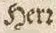
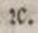
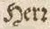
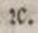

Level 1
The round-r is transcribed according to its meaning, i.e. as the r commonly used today or as et-substituent in abbreviation for et cetera.
| Original | Transcription |
|---|---|
|  | Herr |
|  | etc. |
| Transcription Guidelines for Ground Truth OCR-D: DFG-funded Initiative for Optical Character Recognition Development |
The round-r is transcribed according to its meaning, i.e. as the r commonly used today or as et-substituent in abbreviation for et cetera.
| Original | Transcription |
|---|---|
|  | Herr |
|  | etc. |